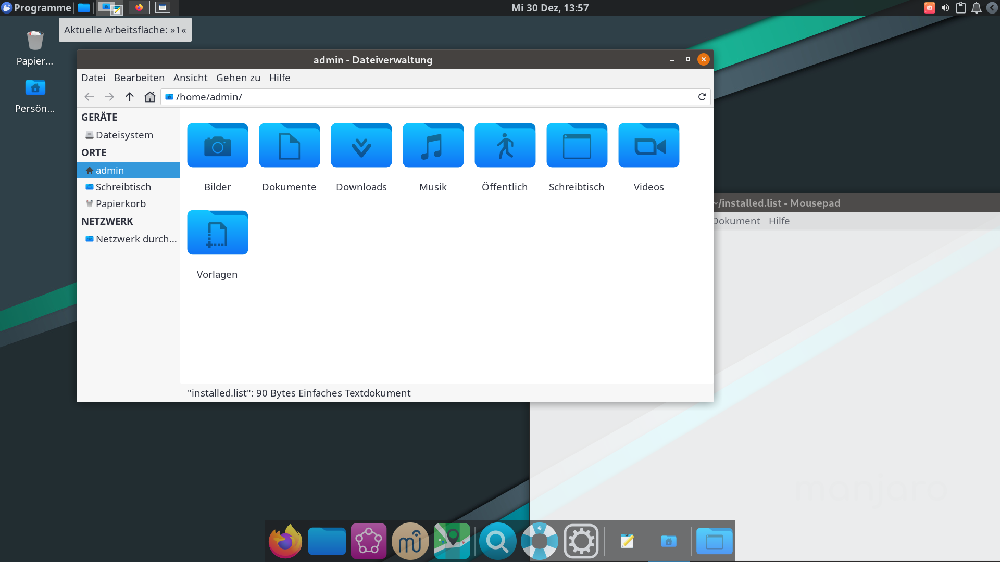

Überblick behalten mit den Arbeitsflächen ("virtuelle Desktops")
Um den Überblick über die geöffneten Fenster zu behalten, kannst du diese auf unterschiedliche Arbeitsflächen sortieren. Die einzelnen Arbeitsflächen und die sich darauf befindenden Fenster werden oben links angezeigt.
In diesem Beispiel ist auf der ersten Arbeitsfläche der Dateimanager und Texteditor, der Webbrowser auf der zweiten und GeoGebra auf der dritten.
Mit Arbeitsflächen umgehen
- Du kannst Super+Pfeil rechts / Super+Pfeil links verwenden, um zwischen den Arbeitsflächen zu wechseln
- Super+1 / Super+2 / Super+3 bringt dich direkt zu der gewünschten Arbeitsfläche
- Um ein Fenster auf eine andere Arbeitsfläche zu verschieben, drückst du Strg+Super+Pfeil rechts / Strg+Super+Pfeil links
- Mit Super+Shift+1 / Super+Shift+2 / Super+Shift+3 kannst du auch Fenster auf die gewünschte Arbeitsfläche schieben
- Das Widget oben Links auf der Leiste gibt dir einen Überblick zu den Arbeitsflächen und den dort geöffneten Fenstern